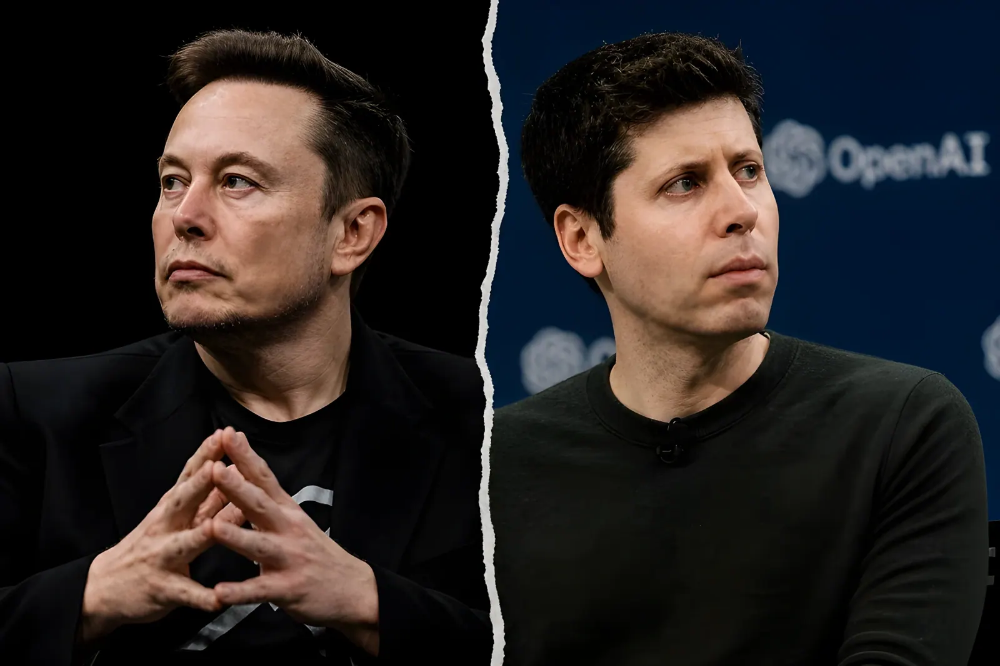

Depuis le 28 avril 2026, le tribunal fédéral d'Oakland accueille le procès le plus scruté de l'histoire de la Silicon Valley : Elon Musk contre Sam Altman et OpenAI. Derrière l'affrontement de deux des hommes les plus puissants de la tech mondiale se pose une question fondamentale : à qui appartient l'intelligence artificielle, et au service de qui doit-elle être développée ? En jeu, la survie d'une entreprise valorisée 852 milliards de dollars — et peut-être l'architecture même de la course mondiale à l'IA.
L'histoire commence en 2015. Sam Altman convainc Elon Musk de cofonder OpenAI avec lui et plusieurs chercheurs en intelligence artificielle, autour d'une promesse commune : créer un laboratoire à but non lucratif dont la technologie appartiendrait à l'humanité entière, et non à des intérêts privés. Musk s'engage à hauteur de 44 millions de dollars entre décembre 2015 et mai 2020. La charte fondatrice stipule qu'OpenAI développerait une technologie open source pour le bien public et qu'elle n'était « pas organisée pour le gain privé d'une personne ».
Dès 2019, la trajectoire bascule. Pour lever les capitaux nécessaires à la course aux grands modèles de langage, OpenAI crée une filiale à but lucratif — Microsoft commence alors à y investir, pour un engagement total qui atteindra 13 milliards de dollars. En février 2018, Musk avait quitté le conseil d'administration, officiellement pour éviter des conflits d'intérêts avec Tesla et SpaceX. OpenAI soutient, preuves à l'appui, qu'il avait tenté de prendre le contrôle total de la société, et qu'à son départ il avait cessé tous ses versements.
À la barre pendant trois jours, Musk a exposé sa thèse avec force : Altman et Brockman l'auraient délibérément trompé pour transformer OpenAI en machine commerciale, dévoyant la vocation philanthropique qu'il pensait avoir financée. Son avocat, Steven Molo, a résumé la position dès son discours d'ouverture : « Nous sommes ici aujourd'hui parce que les défendeurs ont volé une organisation caritative. »
Musk réclame le retour d'OpenAI à son statut d'organisation à but non lucratif — ce qui bloquerait net toute introduction en Bourse. Il exige l'éviction de Sam Altman et de Greg Brockman, la rupture du partenariat avec Microsoft, et la restitution des gains engendrés par la conversion commerciale au bénéfice de la fondation non lucrative. Il avait initialement réclamé jusqu'à 134 milliards de dollars de dommages, avant de se désister de toute demande personnelle, s'engageant à reverser d'éventuelles réparations à la fondation OpenAI.
OpenAI et Microsoft ont développé une contre-narrative radicalement différente. Selon eux, Musk avait lui-même, dès 2015, envisagé qu'OpenAI inclue une entité à but lucratif. En 2017, il aurait même chargé ses conseillers de créer une société commerciale au nom d'OpenAI. L'avocat principal d'OpenAI, William Savitt, a suggéré que Musk avait quitté le conseil en 2018 parce qu'il avait été bloqué dans sa tentative de prise de contrôle unilatérale — non pour des raisons de conflits d'intérêts.
Pour OpenAI, la réalité du conflit est ailleurs : en mars 2023, après son départ, Musk a fondé xAI, son propre laboratoire d'IA concurrent, en tant que société commerciale. La même année, il a signé une lettre publique appelant à une pause dans le développement des IA plus puissantes que GPT-4 — sans mentionner qu'il était en train de créer un concurrent direct. En 2024, il a tenté de racheter OpenAI avec un groupe d'investisseurs. Ce sont ces éléments qui alimentent la thèse centrale de la défense : ce procès n'est pas une question d'éthique, mais une tentative de torpiller un rival commercial.
Fondation d'OpenAI en tant qu'organisation à but non lucratif. Musk s'engage à hauteur de 44 millions de dollars sur cinq ans.
Musk quitte le conseil d'administration d'OpenAI. Il cesse progressivement tous ses versements. OpenAI affirme qu'il a été bloqué dans sa tentative de prendre le contrôle de la société.
OpenAI crée sa filiale commerciale. Microsoft engage ses premiers investissements, portés ensuite à 13 milliards de dollars.
Musk fonde xAI, concurrent direct d'OpenAI, comme société commerciale. Il co-signe également une lettre publique demandant une pause dans le développement de l'IA.
OpenAI finalise sa conversion en Public Benefit Corporation (PBC). Microsoft obtient 27 % du capital. La fondation non lucrative conserve une participation valorisée à 130 milliards de dollars.
Ouverture du procès au tribunal fédéral d'Oakland. Musk témoigne pendant trois jours. Greg Brockman est appelé à la barre la semaine suivante. Sam Altman doit encore témoigner.
La juge Yvonne Gonzalez Rogers a décidé que le verdict du jury ne serait que consultatif : c'est elle qui tranchera seule sur trois questions centrales. OpenAI a-t-elle violé sa mission philanthropique originelle ? S'est-elle enrichie injustement au détriment de ses engagements ? Ses liens avec Microsoft violent-ils le droit de la concurrence ? Si elle donnait raison à Musk, l'entrée en Bourse d'OpenAI — l'une des plus attendues de l'histoire de la tech — serait compromise, et les équilibres de la course mondiale à l'IA profondément rebattus.
Deux jours avant l'ouverture du procès, Musk a envoyé un message à Greg Brockman pour proposer un règlement amiable. Après le refus de Brockman, Musk a répondu : « D'ici la fin de cette semaine, toi et Sam serez les hommes les plus détestés d'Amérique. Si tu insistes, qu'il en soit ainsi. » Ce message, versé au dossier par les avocats d'OpenAI, illustre la dimension personnelle et existentielle d'un conflit qui mêle ambitions technologiques, rivalité commerciale et vision radicalement opposée du rôle de l'IA dans le monde.
Le procès Musk contre Altman est plus qu'un différend juridique entre deux milliardaires. Il cristallise la tension fondamentale de l'ère de l'intelligence artificielle : peut-on confier le développement d'une technologie potentiellement transformatrice à des structures animées par la logique du profit ? La conversion d'OpenAI en Public Benefit Corporation, la montée en puissance de Microsoft au capital, la valorisation stratosphérique de 852 milliards de dollars — tout cela dessine un paysage où les engagements philanthropiques des origines semblent avoir cédé sous le poids des capitaux. Quelle que soit l'issue judiciaire, ce procès impose une question que gouvernements, régulateurs et citoyens ne pourront plus esquiver : qui gouverne l'IA, et au nom de qui ?
Since April 28, 2026, the federal courthouse in Oakland, California has hosted the most closely watched trial in Silicon Valley history: Elon Musk versus Sam Altman and OpenAI. Behind this clash between two of the world's most powerful figures in tech lies a fundamental question — who owns artificial intelligence, and in whose interest should it be developed? At stake is the survival of a company valued at $852 billion, and perhaps the entire architecture of the global AI race.
The story begins in 2015. Sam Altman persuaded Elon Musk to co-found OpenAI alongside several AI researchers, around a shared promise: to build a nonprofit laboratory whose technology would belong to all of humanity, not to private interests. Musk committed $44 million between December 2015 and May 2020. The founding charter stipulated that OpenAI would develop open-source technology for the public good and was "not organised for the private gain of any person."
By 2019, the trajectory had shifted. To raise the capital needed to compete in the race for large language models, OpenAI created a for-profit subsidiary — Microsoft began investing, eventually committing $13 billion. Musk had left the board in February 2018, officially to avoid conflicts of interest with Tesla and SpaceX. OpenAI contends, with documentary evidence, that he had attempted to seize unilateral control of the company, and that following his departure he ceased all financial contributions.
Musk spent three days on the stand laying out his argument: Altman and Brockman deliberately deceived him in order to transform OpenAI into a commercial machine, betraying the philanthropic mission he believed he had funded. His lead attorney, Steven Molo, set the tone in his opening statement: "Ladies and gentlemen, we are here today because the defendants in this case stole a charity."
Musk is seeking a rollback of OpenAI's for-profit structure — which would immediately block any path to an IPO. He is demanding the removal of Altman and Brockman, the severance of the Microsoft partnership, and the return of profits generated by the commercial conversion to the nonprofit foundation. He had initially sought up to $134 billion in damages, before withdrawing any personal claim, pledging to direct any eventual award to the OpenAI Foundation itself.
OpenAI and Microsoft have built a radically different counter-narrative. According to the defence, Musk himself had proposed as early as 2015 that OpenAI include a for-profit entity. In 2017, he allegedly directed his advisors to register a commercial corporation in OpenAI's name. Lead attorney William Savitt suggested that Musk resigned from the board in 2018 because he had been blocked from taking unilateral control — not because of conflicts of interest with his other companies.
For OpenAI, the real motivation behind the lawsuit lies elsewhere. In March 2023, after his departure, Musk founded xAI as a direct commercial competitor to OpenAI. That same year, he co-signed a public letter calling for a pause in the development of AI more powerful than GPT-4 — without disclosing that he was actively building a rival. In 2024, he led an investor group in a bid to acquire OpenAI outright. These elements form the backbone of the defence's central thesis: this is not a case about ethics, but an attempt to cripple a commercial rival.
OpenAI is founded as a nonprofit. Musk commits to contributing $44 million over five years.
Musk resigns from OpenAI's board and progressively halts all payments. OpenAI alleges he had sought to take unilateral control of the company.
OpenAI creates its for-profit subsidiary. Microsoft begins investing, eventually committing $13 billion.
Musk founds xAI as a commercial competitor to OpenAI. He also co-signs a public letter calling for a pause in advanced AI development.
OpenAI completes its conversion to a Public Benefit Corporation. Microsoft holds 27% of the new entity. The nonprofit foundation retains a stake valued at $130 billion.
Trial opens at the federal courthouse in Oakland. Musk testifies for three days. Greg Brockman takes the stand the following week. Sam Altman's testimony is still to come.
Judge Yvonne Gonzalez Rogers has determined that the jury's verdict will be advisory only: she alone will rule on three central questions. Did OpenAI violate its original philanthropic mission? Did it unjustly enrich itself at the expense of its founding commitments? Do its ties to Microsoft violate competition law? If she rules in Musk's favour, OpenAI's IPO — one of the most anticipated in tech history — would be thrown into jeopardy, and the global AI landscape could be fundamentally redrawn.
Two days before the trial began, Musk texted Brockman proposing a settlement. When Brockman suggested both sides drop their claims, Musk replied: "By the end of this week, you and Sam will be the most hated men in America. If you insist, so be it." Entered into the court record by OpenAI's attorneys, this message captures the deeply personal and existential dimension of a conflict that blends technological ambition, commercial rivalry, and radically opposing visions of AI's role in the world.
The Musk v. Altman trial is more than a legal dispute between two billionaires. It crystallises the central tension of the AI era: can the development of a potentially transformative technology be entrusted to structures driven by the logic of profit? OpenAI's conversion to a Public Benefit Corporation, Microsoft's growing stake, the company's stratospheric $852 billion valuation — all of this sketches a landscape in which the philanthropic commitments of the early days appear to have buckled under the weight of capital. Whatever the judicial outcome, this trial forces a question that governments, regulators and citizens will no longer be able to sidestep: who governs AI, and in whose name?